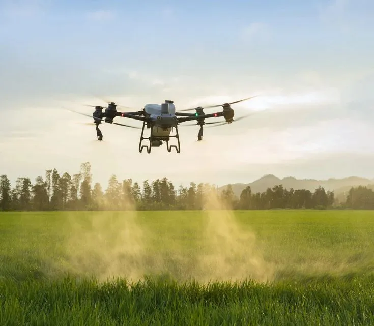

Drone: foto de DJI, solo para el boceto. [PENDIENTE: foto propia o permiso de DJI]
Aplicación aérea con drones · Zárate y zona
Precisión en cada lote. Sin pisar el cultivo.
Aplicaciones agrícolas aéreas con drones para pulverización, fertilización y siembra. Tecnología de precisión aplicada al campo.

¿Qué es AgroAtom?
Tecnología aéreaaplicada al campo.
AgroAtom nace con el objetivo de incorporar nuevas tecnologías a la producción agrícola, ofreciendo soluciones de aplicación aérea mediante drones.
Trabajamos para lograr aplicaciones precisas, eficientes y cuidadosas con el cultivo, especialmente en situaciones donde la maquinaria convencional encuentra limitaciones.
- Zárate, Buenos Aires
- Aplicaciones agrícolas aéreas
- DJI Agras T50
¿Cómo trabaja un dron agrícola?
Del lotea la aplicación.
- 01
Evaluación
Se analiza el lote, el cultivo, la superficie y las condiciones ambientales.
- 02
Preparación
Se configura la misión de vuelo y los parámetros de aplicación.
- 03
Aplicación
El DJI Agras T50 realiza el recorrido de forma automatizada y precisa.
- 04
Control
Se supervisa el trabajo y se verifica la correcta cobertura del lote.
- Superficie48 ha
- Dosis10 L/ha
- Ancho7 m
- Altura3 m
¿Qué puede hacer el T50?
Un mismo equipo,tres trabajos.
-
Pulverización
Aplicación de productos fitosanitarios con precisión sobre el cultivo.
-
Fertilización
Distribución de fertilizantes sólidos de manera uniforme.
-
Siembra
Aplicación de semillas en determinadas condiciones y terrenos.
¿Por qué utilizar un dron?
Cuando el campopresenta limitaciones.
Después de una lluvia
Cuando la maquinaria terrestre no puede ingresar al lote.
Cultivos desarrollados
Reduce el tránsito de maquinaria sobre el cultivo.
En soja de fin de ciclo, la huella del equipo terrestre hizo perder en promedio el 1,7 % del rinde [1].
Menor volumen de agua
Permite trabajar con volúmenes adecuados para determinadas aplicaciones.
En soja y maíz se suele trabajar con 10 a 20 L/ha, siempre según el marbete [2].
Zonas de difícil acceso
Permite llegar a sectores donde la maquinaria convencional presenta dificultades.
Ver fuentes [1] [2]
- Efecto de la pisada de la pulverizadora sobre el rendimiento del cultivo de soja en aplicaciones de fin de ciclo, FAVE Ciencias Agrarias, UNL.
- Aspectos técnicos clave para una aplicación eficiente con drones, Redagrícola.

¿Con qué trabajamos?
DJI Agras T50.
- 40 L
- Tanque de pulverización
- 50 kg
- Carga de sólidos
- 4 a 11 m
- Ancho de pulverización
- DJI
- Tecnología de vuelo y aplicación
Especificaciones
- Caudal de hasta 16 L/min con 2 atomizadores, o 24 L/min con 4.
- Tanque de esparcido de 75 L, con 8 m de ancho de esparcido.
- Hasta 21 ha/h en cultivos extensivos, según DJI, en condiciones ideales.
- Gota regulable de 50 a 500 micrones.
En el lote
- Dos atomizadores centrífugos arman la gota según el producto y la receta.
- La corriente de aire de los rotores empuja la gota hacia la parte media y baja de la planta.
- Dos radares y una cámara doble siguen el terreno (hasta 50° de pendiente) y detectan obstáculos de 1 a 50 m.
Fuente: DJI, especificaciones y funciones del Agras T50. [PENDIENTE: datos propios de campo]
Precisión y control
Cada vueloestá planificado.
- Mapa del lote
- Planificación de ruta
- Parámetros de aplicación
- Vuelo
- Supervisión
Misión de vuelo
Lote 7 · Soja · Fungicida
- Superficie48 ha
- Dosis10 L/ha
- Ancho de trabajo7 m
- Altura de vuelo3 m
- Lote 3 aplicado
- Recarga del tanque
- Cambio de batería
- 9 km/h NE
- 62 %
- 19 °C
¿Cuándo se puede aplicar?
El clima también formaparte de la aplicación.
Las condiciones ambientales influyen directamente en la calidad y la seguridad de una aplicación aérea. Por eso las medimos antes de cada vuelo.
Ver ráfagas, Delta T y las próximas 24 horas
- Ráfagas --
- Delta T (evaporación de la gota) -- Ideal entre 2 y 8 °C
- Lluvia en las próximas 3 h --
Próximas 24 horas
Barras por hora: la altura es el viento en km/h y el color es el estado para aplicar. Usá las flechas para recorrer las horas. Los mismos datos están en la tabla.
Cómo lo calculamos
| Variable | Apto | Precaución | No recomendado |
|---|---|---|---|
| Viento | 4 a 15 km/h | 2 a 4 o 15 a 20 km/h | menos de 2 o más de 20 km/h |
| Ráfagas | hasta 20 km/h | 20 a 25 km/h | más de 25 km/h |
| Delta T | 2 a 8 °C | menos de 2 o 8 a 10 °C | más de 10 °C |
| Temperatura | hasta 28 °C | 28 a 32 °C | más de 32 °C |
| Humedad | 50 % o más | 40 a 50 % | menos de 40 % |
| Lluvia | menos de 30 % en 3 h | 30 a 60 % | más de 60 % o lloviendo |
[PENDIENTE: confirmar estos umbrales con ustedes y su asesor]
Ver los datos en una tabla
Guía orientativa con el pronóstico para Lima, Zárate. En el lote medimos viento, temperatura y humedad antes de cada vuelo, y la decisión final se toma con la receta agronómica.
Datos: Open-Meteo.com (CC BY 4.0).
AgroAtom en el campo
Trabajo real.Tecnología real.
Fotos de nuestro equipo trabajando en lotes de la zona.
- El T50 trabajando[PENDIENTE: foto]
- Carga del tanque[PENDIENTE: foto]
- Preparando una aplicación[PENDIENTE: foto]
- El despegue[PENDIENTE: foto]
- El lote terminado[PENDIENTE: foto]
Nosotros
Somos AgroAtom.
Somos un equipo dedicado a incorporar tecnología de precisión al trabajo agrícola.
AgroAtom nació en Zárate con la visión de aprovechar las posibilidades que ofrecen los drones para desarrollar nuevas formas de trabajar sobre el campo.
- MatíasDirección y operaciones [PENDIENTE: confirmar]
- FrancoOperaciones [PENDIENTE: rol]
- Los dos con licencia de piloto provincial
- Habilitación de transporte y aplicación de fitosanitarios
- Trabajando desde septiembre de 2025
Preguntas frecuentes
¿Tenés una dudapuntual?
[PENDIENTE: confirmar las respuestas]
¿Qué tipo de aplicaciones realizan?
Pulverización, fertilización y siembra.
¿Hasta dónde trabajan?
Zárate y localidades de la zona, con posibilidad de trasladarnos según el trabajo.
¿El drone puede trabajar después de una lluvia?
Puede ser una alternativa cuando las condiciones del terreno dificultan el ingreso de maquinaria terrestre, siempre evaluando las condiciones de aplicación.
¿Cuánto puede cubrir?
DJI indica hasta 21 ha por hora en cultivos extensivos y en condiciones ideales. En cada lote depende de la dosis, la forma del lote, los obstáculos y dónde se recarga. [PENDIENTE: hectáreas por día que hacen ustedes]
¿El vuelo es automático?
Sí. El T50 sigue una ruta planificada sobre el mapa del lote, con los parámetros de aplicación cargados. El piloto supervisa todo el vuelo y puede tomar el control en cualquier momento.
¿Qué condiciones climáticas se necesitan?
Viento moderado, sin lluvia y con temperatura y humedad adecuadas para que la gota no se evapore ni se desvíe. Antes de cada vuelo lo medimos en el lote. Mirá la sección del clima.
¿Necesito receta agronómica?
Sí. Las aplicaciones de fitosanitarios las hacemos siempre con receta agronómica.
Contacto
¿Querés conocer mássobre AgroAtom?
- WhatsApp+54 9 3487 21-7345
- Instagram@agro.atom
- Emailagroatom00@gmail.com
- UbicaciónZárate, Buenos Aires